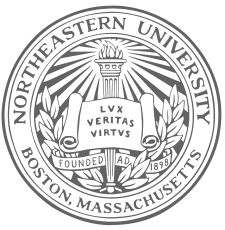
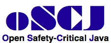
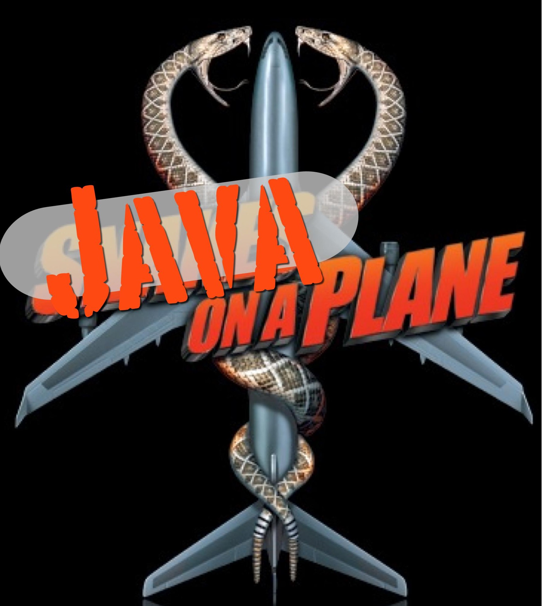
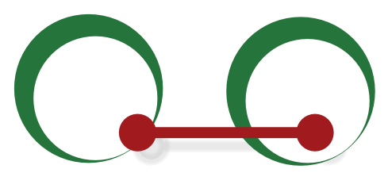

My research focus on design and implementation of programming abstractions in areas that have included real-time embedded systems, concurrent and distributed systems and more recently scalable data analytics.
I have published in venues that specialize in Programming Languages, Virtual Machines, Compilers, Software Engineering, Real-time Computing, and Bioinformatics.
I enjoy beautiful code that solves real-world problems.
Software & papers should be free.
Research should be repeatable and replicated.


| Czech by birth. | |
| Swiss by adoption, I miss the Alps. |
Jan Vitek is a Professor of Computer Science at Northeastern University. He holds degrees from the University of Geneva andd Victoria. He works on topics related to the design and implementation of programming languages. In the Ovm project, he led the implementation of the first real-time Java virtual machine to be successfully flight-tested. Together with Noble and Potter, he proposed a concept that became known as Ownership Types. He was one of the designers of the Thorn language. He worked on gaining a better understanding of the JavaScript language and is looking at how to support scalable data analysis in R. Prof. Vitek chaired ACM SIGPLAN; he was the Chief Scientist at Fiji Systems and the founding team at H2O.ai, a vice chair of AITO; a vice chair of IFIP WG 2.4, and chaired SPLASH, PLDI, ECOOP, ISMM and LCTES and was program chair of ESOP, ECOOP, VEE, Coordination, and TOOLS.
[news]
| The third Programming Language Implementation Summer School will be in Italy in 2020 | |
| Received the 2019 ACM SIGPLAN Distinguished Service Award | |
| Our 1998 ownership paper, Flexible Alias Protection, got the ECOOP Test-Of-Time award in 2018 | |
| The OOPSLA artifact evaluation process accepted a record 35 artifacts and 33 are archived for reuse | |
| Genthat received an ISSTA'18 distinguished artifact award | |
| I co-organizedthe first Workshop on Speculative Side Channel Analysis, 2018 | |
| I co-organized the first ONR-funded workshop Workshop on SoftwAre debLoating And Delayering | Our paper on code duplication on Github is popular here here here ici bot 这里 这里 [Talk] [Distinguished Artifact] |
| Our work on analysis of JavaScript is supported by a Google Faculty Research Award | |
| Build a JIT with LLVM class at CVUT with Oli and Peta [source] | |
| I was Chair of SIGPLAN, here is my final report | |
| ECOOP has been Gold Open Access since 2015 | |
| Arguing for artifact evaluation in CACM |
[service]
Honors
| 2019 | ACM SIGPLAN Distinguished Service Award |
| 2018 | ECOOP Test of Time Award |
| 2018 | ISSTA Distinguished Artifact Award |
| 2017 | OOPSLA Distinguished Artifact Award |
| 2013 | Purdue Undergraduate Advising Award |
| 2011 | Purdue University Faculty Scholar |
| 2011 | Purdue Undergraduate Advising Award |
| 2011 | Microsoft SEIF Research Award |
| 2006 | IBM Faculty Award |
| 2001 | NSF CAREER Award |
Conferences
| ECOOP'20 | Workshop Chair |
| OOPSLA'19 | Artiface Evaluation Chair |
| ETAPS'19 | General Chair |
| SPLASH'18 | General Chair |
| OOPSLA'18 | Artifact Evaluation Chair |
| ECOOP'15 | Comfy Chair |
| ESOP'15 | Program Chair |
| POPL'15 | Artiface Evaluation Chair |
| PLDI'14 | Artiface Evaluation Chair |
| ECOOP'13 | Artiface Evaluation Chair |
| PLDI'12 | General Chair |
| LCTES'11 | General Chair |
| ISMM'10 | General Chair |
| TOOLS'10 | Program Chair |
| JTRES'10 | Program Chair |
| ECOOP'08 | Program Chair |
| COORD'07 | Program Chair |
| TRANSACT'06 | General Chair |
| VEE'05 | Program Chair |
| PLDI'05 | Tutorial Chair |
Events
| PLISS | Programming Language Implementation Summer School, 2017, 2019, 2020 |
| ESS | ECOOP Summer School: 2010, 2011, 2012, 2013, 2014, 2015, 2016, 2017, 2018 |
| REMC'16 | Dagstuhl Seminar 16111 on Rethinking Experimental Methods in Computing |
| SPLASH-I | SPLASH-I track: 2013, 2015, 2018 |
| SOTU.JS'14 | Stat of the Union: JavaScript |
| DALI'13 | NSF Workshop on Dynamic Languages for Scalable Data Analytics |
| PDB'13 | NSF Workshop on Programming with Big Data |
| VEESC'10 | Workshop on Dynamic Languages for Scientific Computing |
| TiC | Trends in Concurrency: 2006, 2008, 2010 |
| TMW'10 | NSF Transactional Memory Workshop |
| WG2.4 | IFIP WG2.4 meeting in Bormio |
| TfT'05 | Dagstuhl Workshop on Types for Tools |
Activities
| Bioconductor | Scientific Advisory Board, 2017-- |
| SIGPLAN | Past Chair, 2015--2018 |
| SIGPLAN | Chair, 2012--2015 |
| AITO | Vice President, 2010--2018 |
| IFIP WG2.4 | Vice Chair, 2011--2015 |
| Comin Labs | Member, Advisory Board, 2011--2016 |
| JSR-302 | Member, Expert Group, 2008--2013 |
| LCTES | Member, SC, 2011--2015 |
| ICFP | Member, SC, 2012--2015 |
| OOPSLA | Member, SC, 2012-- |
| PLDI | Member SC, 2012--18; Chair 2014--16 |
| POPL | Member, SC, 2012--2015 |
| ISMM | Member, SC, 2010--2015 |
| JTRES | Member, SC, 2010--2017 |
| TRANSACT | Founding Member, SC, 2006--2017 |
| RIOT | Founding Member, SC, 2015-- |
| ML4PL | Founding Member, SC, 2015 |
| STOP | Founding Member, SC, 2011-- |
| JOT | Editor in Chief, 2013--2014 |
Invited Talks
| FedCSIS'17 | Data Analysis for the Masses. Prague Video |
| Scala'16 | This Is Not A Type: Gradual Typing in Practice. Amsterdam |
| useR | Making R run fast. Greater Boston useR Group Video |
| PLMW'16 | My twenty five years in OO. Amsterdam |
| MLOC.JS'15 | Benchmarks killed the beast: Understanding JS performance for fun and profit. International Large Scale JavaScript Conference, Budapest |
| PLMW'15 | Repeatability, reproducibility and rigor in CS research. Programming Language Mentoring Workshop, Mumbai Video 1 2 |
| VEE'14 | The Case for the Three Rs of Systems Research: Repeatability, Reproducibility and Rigor |
| SCR'13 | Why JavaScript Programmers Hate You: An ode to dynamic languages. Workshop on Software Correctness and Reliability, Zurich PDF Video |
| PLMW'13 | Planet Dynamic or: How I Learned to Stop Worrying and Love Reflection. SIGPLAN Programming Languages Mentoring Workshop, Rome |
| FTFJP'13 | JavaScript Programmers Hate You. Formal Techniques for Java-like Programs, Montpellier |
| APLAS'12 | Planet Dynamic or: How I Learned to Stop Worrying and Love Reflection. Asian Symposium on Programming Languages and Systems, Kyoto |
| Aki'12 | Thorn: Objects, Scripts and more... Concurrent Objects and Beyond Symposium in Honor of Professor Akinori Yonezawa’s 65th Birthday, Kobe |
| MSR'11 | The Rise of Dynamic Languages for Scientific Computing, MSR Faculty Summit Video |
| MVD 10 | Is Java Ready for Real-time? PDF |
| APLWA'10 | Of Scripts and Programs Tall tales, Urban Legends and Future Prospects PDF |
| DLS'09 | Of Scripts and Programs Tall tales, Urban Legends and Future Prospects PDF |
| TOOLS'09 | Programming models for Real-time and Concurrency. PDF |
| FCS'05 | Language-based Intrusion Detection, Foundations of Computer Security |
| FOSAD'04 | Coordination and Security, School on Foundations of Security Analysis and Design PDF |
Program Committees
| APLAS | Asian Symp. on Programming Languages and Systems, 2014 |
| ARRAY | Workshop on Libraries, Languages, and Compilers for Array Programming, 2014, 2015, 2017 |
| AIOOL | Workshop on Abstract Interpretation of Object-oriented Languages, 2005 |
| ACP4IS | Workshop on Aspects, Components, and Patterns for Infrastructure Software, 2003, 2004 |
| ASA/MA | Agent Systems and Applications/ Mobile Agents, 2001 |
| AISB | Symposium on Software mobility and adaptive behaviour, 2001 |
| Bytecode | Workshop on Bytecode Semantics, Verification, Analysis and Transformation, 2007, 2008 |
| CC | Conference on Compiler Construction, 2003, 2008, 2012, 2014 |
| CSF | Computer Security Foundations Symposium, 2008 |
| CORDIE | Workshop on Concurrency, Real-Time and Distribution in Eiffel, 2006 |
| COORD | Conference on Coordination Models and Languages, 2005, 2009 |
| CPS | Workshop on Cyber-Physical Systems, 2008, 2009 |
| CD | Component Deployment, 2002, 2004 |
| CSJP | Workshop on Concurrency and Synchronization in Java Programs, 2004 |
| DATE | DATE Conference, Model Based Design of Embedded Systems track, 2010 |
| DLS | Dynamic Language Symposium Conference, 2010, 2014, 2015, 2016, 2017 |
| DOSW | Distributed Object Security Workshop, 1999 |
| ECOOP | European Conference on Object-Oriented Programming, 1998, 2000, 2001, 2002, 2003, 2007, 2008, 2009, 2010, 2013, 2017, 2020 |
| ESOP | European Symposium on Programming, 2002, 2007, 2009, 2011, 2015, 2016 |
| EMSOFT | Conference on Embedded Software, 2011. |
| EUC | Conference on Embedded and Ubiquitous Computing, 2009, 2010 |
| FEAST | Workshop on Forming an Ecosystem Around Software Transformation, 2017 |
| FOCLASA | Foundations of Coordination Languages and Software Architectures, 2007 |
| FOOL | Foundations of Object-Oriented Languages, 2013 |
| GCM | Workshop on Green Computing Middleware, 2011. |
| GPCE | Generative Programming: Concepts & Experiences, 2013 |
| MASS | Symposium on Multi-Agent Security and Survivability, 2004 |
| FTfJP | Workshop on Formal Techniques for Java-like Programs, 2005 |
| HCSP | Workshop on High Confidence Software Platforms for Cyber-Physical Systems, 2006 |
| HotPar | Topics in Parallelism, 2013 |
| ICOOOLPS | Implementation, Compilation, Optimization of Object-Oriented Languages, Programs and Systems, 2006, 2013, 2015, 2017 |
| ICALP | International Conference on Automata, Languages and Programming, 2000 |
| ICFP | International Functional Programming Conference, 2005 |
| ISORC | International Symposium on Object and componentoriented Real-time Computing, 2012. |
| IWMSE | International Workshop on Multicore Software Engineering, 2010 |
| IWACO | International Workshop on Aliasing, Confinement and Ownership, 2003, 2007, 2014 |
| IWAOOS | Intercontinental Workshop on Aliasing in Object- Oriented Systems, 1999 |
| JTRes | Workshop on Java Technologies for Real-Time and Embedded Systems, 2008, 2007, 2006, 2005, 2004, 2003, 2008, 2009, 2010 |
| JFLA | Journees Francophones des Langages Applicatifs, 2000, 1998, 1995 |
| ManLang | International Conference on Managed Languages and Runtimes, 2017, 2018, |
| MOS | Mobile Objects Systems Workshop, 2004, 2003, 2002, 2001, 2000, 1999, 1998, 1997, 1996, 1995 |
| MUSEPAT | Multicore Software Engineering, Performance, Applications, and Tools, 2016 |
| PLACES | Programming Language Approaches to Concurrency and Communication-cEntric Software, 2009, 2010, 2011, 2012 |
| PLAS | Workshop on Programming Languages and Analysis for Security, 2007 |
| PLASTIC | Workshop on Programming Language And Systems Technologies for Internet Clients, 2011 |
| PLDI | Programming Language Design and Implementation, 2002, 2010, 2013 |
| PODC | Symposium on Principles of Distributed Computing, 2010 |
| POPL | Principles of Programming Languages, 2001, 2008, 2011. |
| PPPJ | conference on Principles and Practice of Programming in Java, 2006 |
| RTAS | Real-Time and Embedded Technology and Applications Symposium, 2011. |
| RTSS | Real-Time System Symposium, 2009, 2010, 2011. |
| SACMAT | Symposium on Access Control Models and Technologies, 2001 |
| SANCS | Workshop on Software Architectures for Next-generation Cyber-physical Systems, 2015 |
| SCALA | Scala Symposium, 2015 |
| STOP | Script to Program Evolution Workshop, 2016 |
| OBT | Off-the Beaten Track, 2014 |
| OOPS | Object Oriented Programming Languages and Systems 2005, 2004 |
| OOPSLA | Object-Oriented Programming Systems, Languages, and Applications, 2000, 2004, 2007, 2008, 2016 |
| SALAD | Workshop on SoftwAre debLoating And Delayering, 2018 |
| SecCo | Workshop on Security Issues in Concurrency, 2003, 2004, 2007 |
| TRUST | Workshop on Reproducible Research Methodologies and New Publication Models, 2014 |
| RIOT | R Implementation Optimization and Tooling Workshop, 2015, 2016, 2017 |
| RUMPLE | Workshop on ReUsable and Modular Programming Language Ecosystems, 2016 |
| VEE | Conference on Virtual Execution Environments, 2011, 2018, 2019 |
| VMIL | Workshop on Virtual Machines and Intermediate Languages, 2009, 2019 |
| WASDeTT | Workshop on Academic Software Development Tools and Techniques, 2013 |
| WoSSCA | Workshop on Speculative Side Channel Analysis, 2018 |
| WWW | The Web Conference, 2018 |
[projects]
Active
 |
Analyze the dynamic behavior of JavaScript programs and its implications on analyses and security. Code available for JSBench and JSLocker. Data available for our analysis papers. |
 |
The Fiji real-time JVM and Fiji C1 compiler run on on a broad range of HW/OS (ARM, PowerPC and x86, RTEMS, Linux, Darwin), with deterministic garbage collection, or safe GC-less allocation. Allow to create mixed-criticality systems with isolation and partitioning. |
| AllR | Tools related to the R programming language including the Purdue implementation of the FastR virtual machine (2014), timeR, testR and benchR. Code and data available. FastR has been transitionned to Oracle. |
History
| AJ | Data-centric concurrency control for Java using atomic-sets. Project completed in 2013 in collaboration with IBM research. Data available. |
| FlexoTasks | Very low latency real-time streaming in Java. Project completed in 2010 in collaboration with IBM research. Code and data available. |
| Thorn is a dynamically-typed concurrent language in which lightweight isolated processes communicate by message passing. Thorn includes aggregate data types, class-based objects, first-class functions, modules, and features for gradual evolution of scripts to programs. Completed in 2010. | |
 |
The Ovm project aims to develop a customizable framework for research in virtual machines and object-oriented programming language runtime systems. Completed in 2009. Code available. |
|  | An open-source implementation of a subset of Safety-Critical Java. Completed in 2010. Code available. |
| CDx | CDx is an open source application benchmark suite that targets hard and soft real-time Java virtual machines. Completed in 2009. Code and data available. |
|  | Real-time Java controls for a ScanEagle UAV. Winner of DUKE's Choice award. Completed in 2005. |
| stmbench7 | A benchmark for evaluating software transactional memory implementations. The benchmark aims at providing a workload that is both realistic and non-trivial to scale. Code available. Completed in 2007. |
|  | MBA is a Java program for automated assignment and assessment of uncertainty of protein backbone NMR. Completed in 2006. Code and data available. |
[publications]
- OOPSLA'19Scala Implicits are Everywhere: A large-scale study of the use of Implicits in the wild
Authors: Filip Krikava, Heather Muller, Jan Vitek.
Abstract: The Scala programming language offers two distinctive language features implicit parameters and implicit conversions, often referred together as implicits. Announced without fanfare in 2004, implicits have quickly grown to become a widely and pervasively used feature of the language. They provide a way to reduce the boilerplate code in Scala programs. They are also used to implement certain language features without having to modify the compiler. We report on a large-scale study of the use of implicits in the wild. For this, we analyzed 7,280 Scala projects hosted on GitHub, spanning over 8.1M call sites involving implicits and 370.7K implicit declarations across 18.7M lines of Scala code.
Venue: PACM PL: Conference on Object-Oriented Programming Languages, Systems and Applications (OOPSLA)
DOI: 10.1145/3360589 Artifact: 10.5281/zenodo.3369436 Video: YouTube
- OOPSLA'19On the Design, Implementation and Use of Laziness in R
Authors: Aviral Goel, Jan Vitek.
Abstract: The R programming language has been lazy for over twenty five years. This paper presents a review of the design and implementation of call-by-need in R, and a data-driven study of how generations of programmers have put laziness to use in their code. We analyze 16,707 libraries and observe the creation of 270.9 B promises. Our data suggests that there is little supporting evidence to assert that programmers use laziness to avoid unnecessary computation or to operate over infinite data structures. For the most part R code appears to have been written without reliance on, and in many cases even knowledge of, delayed argument evaluation. The only significant exception is a small number of packages and core libraries which leverage call-by-need for meta-programming.
Venue: PACM PL: Conference on Object-Oriented Programming Languages, Systems and Applications (OOPSLA)
DOI: 10.1145/3360579 Artifact: 10.5281/zenodo.3369573
Video: YouTube
- DLS'19 R Melts Brains: An IR for First-Class Environments and Lazy Effectful Arguments
Authors: Olivier Flückige, Ming-Ho Yee, Guido Chari, Jakob Hain, Jan Ječmen, Jan Vitek
Abstract: The R programming language combines a number of features considered hard to analyze and implement efficiently: dynamic typing, reflection, lazy evaluation, vectorized primitive types, first-class closures, and extensive use of native code. Additionally, variable scopes are reified at runtime as first-class environments. The combination of these features renders most static program analysis techniques impractical, and thus, compiler optimizations based on them ineffective. We present our work on PIR, an intermediate representation with explicit support for first-class environments and effectful lazy evaluation. We describe two dataflow analyses on PIR: the first enables reasoning about variables and their environments, and the second infers where arguments are evaluated. Leveraging their results, we show how to elide environment creation and inline functions.
Venue: Dynamic Language Symposium (DLS)
DOI: 10.1145/3276945.3276946 Artifact: github.com/reactorlabs/rir Video: Youtube
- ECOOP'19 Julia's efficient algorithm for subtyping unions and covariant tuples
Authors: Benjamin Chung, Francesco Zappa Nardelli, Jan Vitek
Abstract: The Julia programming language supports multiple dispatch and provides a rich type annotation language to specify method applicability. When multiple methods are applicable for a given call, Julia relies on subtyping between method signatures to pick the correct method to invoke. Julia’s subtyping algorithm is surprisingly complex, and determining whether it is correct remains an open question. In this paper, we focus on one piece of this problem: the interaction between union types and covariant tuples. Previous work normalized unions inside tuples to disjunctive normal form. However, this strategy has two drawbacks: complex type signatures induce space explosion, and interference between normalization and other features of Julia’s type system. In this paper, we describe the algorithm that Julia uses to compute subtyping between tuples and unions—an algorithm that is immune to space explosion and plays well with other features of the language. We prove this algorithm correct and complete against a semantic-subtyping denotational model in Coq.
Venue: European Conference on Object-Oriented Programming (ECOOP)
DOI: 10.4230/LIPIcs.ECOOP.2019.24 Artifact: dx.doi.org/10.4230/DARTS.5.2.8 Video: Youtube
- TOPLAS'19On the Impact of Programming Languages on Code Quality
Authors: Emery D. Berger, Celeste Hollenbeck, Petr Maj, Olga Vitek, Jan Vitek.
Abstract: In a 2014 paper, Ray, Posnett, Devanbu, and Filkov claimed to have uncovered a statistically significant association between eleven programming languages and software defects in 729 projects hosted on GitHub. Specifically, their work answered four research questions relating to software defects and programming languages. With data and code provided by the authors, the present paper first attempts to conduct an experimental repetition of the original study. The repetition is only partially successful, due to missing code and issues with the classification of languages. The second part of this work focuses on their main claim, the association between bugs and languages, and performs a complete, independent reanalysis of the data and of the statistical modeling steps undertaken by Ray et al. in 2014. This reanalysis uncovers a number of serious flaws which reduce the number of languages with an association with defects down from eleven to only four. Moreover, the practical effect size is exceedingly small. These results thus undermine the conclusions of the original study. Correcting the record is important, as many subsequent works have cited the 2014 paper and have asserted, without evidence, a causal link between the choice of programming language for a given task and the number of software defects. Causation is not supported by the data at hand; and, in our opinion, even after fixing the methodological flaws we uncovered, too many unaccounted sources of bias remain to hope for a meaningful comparison of bug rates across languages.
Venue: ACM Tansactions on Programming Languages (TOPLAS)
DOI: 10.1145/3340571 Artifact: github.com/PRL-PRG/TOPLAS19_145_Artifact Video: CurryOn version OOPSLA version (short)
- TECS'19Can Android Run on Time? Extending and Measuring the Android Platform's Timeliness
Authors: Yin Yan, Girish Gokul, Karthik Dantu, Steven Y. Ko, Lukasz Ziarek, and Jan Vitek.
Abstract: Time predictability is difficult to achieve in the complex, layered execution environments that are common in modern embedded devices such as smartphones. We explore adopting the Android programming model for a range of embedded applications that extends beyond mobile devices, under the constraint that changes to widely used libraries should be minimized. The challenges we explore include: the interplay between real-time activities and the rest of the system, how to express the timeliness requirements of components, and how well those requirements can be met on stock embedded platforms. We detail the design and implementation of our modifications to the Android framework along with a real-time VM and OS, and provide experimental data validating feasibility over five applications.
Venue: Transactions on Embedded Computing Systems (TECS)
DOI: 10.1145/3289257
- JFP'19 How to Evaluate the Performance of Gradual Type Systems
Authors: Ben Greenman, Asumu Takikawa, Max S. New, Daniel Felty, Robert Bruce Findler, Jan Vitek and Matthias Felleisen.
Abstract: A sound gradual type system ensures that untyped components of a program can never break the guarantees of statically typed components. This assurance relies on runtime checks, which in turn impose performance overhead in proportion to the frequency and nature of interaction between typed and untyped components. The literature on gradual typing lacks rigorous descriptions of methods for measuring the performance of gradual type systems. This gap has consequences for the implementors of gradual type systems and developers who use such systems. Without systematic evaluation of mixed-typed programs, implementors cannot precisely determine how improvements to a gradual type system affect performance. Developers cannot predict whether adding types to part of a program will significantly degrade (or improve) its performance. This paper presents the first method for evaluating the performance of sound gradual type systems. The method quantifies both the absolute performance of a gradual type system and the relative performance of two implementations of the same gradual type system. To validate the method, the paper reports on its application to twenty programs and three implementations of Typed Racket.
Venue: Journal of Functional Programs (JFP)
DOI: 10.1017/S0956796818000217
- TOPLAS'19Feature-Specific Profiling
Authors: Leif Andersen, Vincent St-Amour, Jan Vitek, Matthias Felleisen.
Abstract: While high-level languages come with significant readability and maintainability benefits, their performance remains difficult to predict. For example, programmers may unknowingly use language features inappropriately, which cause their programs to run slower than expected. To address this issue, we introduce feature-specific profiling, a technique that reports performance costs in terms of linguistic constructs. Festure-specific profilers help programmers find expensive uses of specific features of their language. We describe the architecture of a profiler that implements our approach, explain prototypes of the profiler for two languages with different characteristics and implementation strategies, and provide empirical evidence for the approach’s general usefulness as a performance debugging tool.
Venue: ACM Tansactions on Programming Languages (TOPLAS)
DOI: 10.1145/3275519
- JAR'18Verifying a Concurrent Garbage Collector with a Rely-Guarantee Methodology
Authors: Yannick Zakowski, David Cachera, Delphine Demange, Gustavo Petri, David Pichardie, Suresh Jagannathan and Jan Vitek.
Abstract: Concurrent garbage collection algorithms are a challenge for program verification. In this paper, we address this problem by proposing a mechanized proof methodology based on the Rely-Guarantee proof technique. We design a compiler intermediate representation with strong type guarantees, dedicated support for abstract concurrent data structures, and high-level iterators on runtime internals. In addition, we define an Rely-Guarantee program logic supporting an incremental proof methodology where annotations and invariants can be progressively enriched. We formalize the intermediate representation, the proof system, and prove the soundness of the methodology in the Coq proof assistant. Equipped with this, we prove a fully concurrent garbage collector where mutators never have to wait for the collector.
Venue: Journal of Automated Reasoning (JAR)
DOI: https://doi.org/10.1007/s10817-018-9489-x
-
OOPSLA'18 Julia: Dynamism and Performance Reconciled by Design
Authors: Benjamin Chung, Lionel Zoubritzky, Jeff Bezanson, Stefang Karpinski, Viral Shah, Jan Vitek
Abstract: Julia is a programming language for the scientific community that combines features of productivity languages, such as Python or MATLAB, with characteristics of performance-oriented languages, such as C++ or Fortran. Julia has many productivity features: dynamic typing, automatic memory management, rich type annotations, and multiple dispatch. At the same time, it lets programmers control memory layout and uses a specializing just-in-time compiler that eliminates some of the overhead of those features. This paper details these choices, and reflects on their implications for performance and usability.
Venue: PACM PL: Conference on Object-Oriented Programming Languages, Systems and Applications (OOPSLA)
DOI: 10.1145/3276490 -
OOPSLA'18 Julia Subtyping: A Rational Reconstruction
Authors: Francesco Zappa Nardelli, Artem Pelenitsyn, Julia Belyakova, Benjamin Chung, Jeff Bezanson, Jan Vitek
Abstract: Programming languages that support multiple dispatch rely on an expressive notion of subtyping to specify method applicability. In these languages, type annotations on method declarations are used to select, out of a potentially large set of methods, the one that is most appropriate for a particular tuple of arguments. Julia is a language for scientific computing built around multiple dispatch and an expressive subtyping relation. This paper provides the first formal definition of Julia’s subtype relation and motivates its design. We validate our specification empirically with an implementation of our definition that we compare against the existing Julia implementation on a collection of real-world programs. Our subtype implementation differs on 122 subtype tests out of 6,014.476. The first 120 differences are due to a bug in Julia that was fixed once reported; the remaining 2 are under discussion.
Venue: PACM PL: Conference on Object-Oriented Programming Languages, Systems and Applications (OOPSLA)
DOI: 10.1145/3276483 - DLS'18Self-Contained Development Environments
Authors: Guido Chari, Javeier Pimas, Olivier Fluckiger, Jan Vitek
Abstract: Operating systems are traditionally implemented in low-level, performance-oriented programming languages. These languages typically rely on minimal runtime support and provide unfettered access to the underlying hardware. Tradition has benefits: developers control the resources that the operating system manages and few performance bottle-necks cannot be overcome with clever feats of programming. On the other hand, this makes operating systems harder to understand and maintain. Furthermore, those languages have few built-in barriers against bugs. This paper is an experiment in side-stepping operating systems, and pushing functionality into the runtime of high-level programming languages. The question we try to answer is how much support is needed to run an application written in, say, Smalltalk or Python on bare metal, that is, with no underlying operating system. We present a framework named NopSys that allows this, and we validate it with the implementation of CogNos a Smalltalk virtual machine running on bare x86 hardware. Experimental results suggest that this approach is promising.
Venue: Dynamic Language Symposium (DLS)
DOI: 10.1145/3276945.3276948
- ISSTA'18Tests from Traces: Automated Unit Test Extraction for R
Authors: Filip Krikava, Jan Vitek
Abstract: Unit tests are labor-intensive to write and maintain. This paper looks into the possibility of automatically generating unit tests for a target software package from the execution traces of client code and examples. Our objective is to reduce the effort involved in creating test suites while minimizing the number and size of individual tests, and maximizing coverage. To evaluate the viability of our approach, we select a challenging target for automated test generation, namely R, a programming language that is popular for data science applications. The challenges presented by R are its extreme dynamism and lack of types. This combination decrease the efficacy of traditional test generation techniques. We present Genthat, a tool developed over the last couple of years to non-invasively record execution traces of R programs and extract unit tests from those traces. We have carried out an evaluation on 1,547 packages comprising 1.7M lines of R code. The tests generated by Genthat improved code coverage from the original rather low value of 267,113 lines to 704,450 lines.
Venue: International Symposium on Software Testing and Analysis (ISSTA)
DOI: 10.1145/3213846.3213863
- ECOOP'18 KafKa: Gradual Typing for Objects
Authors: Benjamin Chung, Paley Li, Francesco Zappa Nardelli, Jan Vitek
Abstract: The enduring popularity of dynamically typed languages has motivated research on gradual type systems to allow developers to annotate legacy dynamic code piecemeal. Type soundness for a program which contains a mixture of typed and untyped code cannot mean the traditional absence of errors. While some errors will be caught at type checking time, other errors will only be caught as the program executes. After a decade of research it there are still a number of competing approaches to providing gradual type support for object-oriented languages. We introduce a framework for comparing gradual type systems, combining a common source languages with KafKa, a core calculus for object-oriented gradual typing. KafKa decouples the semantics of gradual typing from those of the source language. KafKa is strongly typed in order to highlight where dynamic operations are required. We illustrate our approach by translating idealizations of four different gradually typed semantics into the core calculus and discuss the implications of their respective designs.
Venue: European Conference on Object-Oriented Programming (ECOOP)
DOI: 10.4230/LIPIcs.ECOOP.2018.12
-
ESOP'18Soundness of a Concurrent Collector for Actors
Authors: Juliana Franco, Sylvan Clebsch, Sophia Drossopoulou, Jan Vitek, Tobias Wrigstad
Abstract: ORCA is a garbage collection protocol for actor-based programs. Multiple actors may mutate the heap while the collector is running without any dedicated synchronisation. ORCA is applicable to any actor language whose type system prevents data races and which supports causal message delivery. We present a model of ORCA which is parametric to the host language and its type system. We describe the interplay between the host language and the collector. We give invariants preserved by ORCA, and prove its soundness and completeness.
Venue: European Symposium on Programming (ESOP)
DOI: 10.1007/978-3-319-89884-1_31
-
POPL'18 Correctness of Speculative Optimizations with Dynamic Deoptimization
Authors: Olivier Fluckiger, Gabriel Scherer, Ming-Ho Yee, Aviral Goel, Amal Ahmed and Jan Vitek
Abstract: High-performance dynamic language implementations make heavy use of speculative optimizations to achieve speeds close to statically compiled languages. These optimizations are typically performed by a just-in-time compiler that generates code under a set of assumptions about the state of the program and its environment. In certain cases, a program may execute code compiled under assumptions that are no longer valid. The implementation must then deoptimize the program on-the-fly; this entails finding semantically equivalent code that does not rely on invalid assumptions, translating program state to that expected by the target code, and transferring control. This paper looks at the interaction between optimization and deoptimization, and shows that reasoning about speculation is surprisingly easy when assumptions are made explicit in the program representation. This insight is demonstrated on a compiler intermediate representation, named sourir, modeled after the high-level representation for a dynamic language. Traditional compiler optimizations such as constant folding, unreachable code elimination, and function inlining are shown to be correct in the presence of assumptions. Furthermore, the paper establishes the correctness of compiler transformations specific to deoptimization: namely unrestricted deoptimization, predicate hoisting, and assume composition.
Venue: PACM PL: Symposium on Principles of Programming Languages (POPL)
DOI: 10.1145/3158137 -
OOPSLA'17Dej́à Vu: A Map of Code Duplicates on GitHub
Authors: Crista Lopes, Petr Maj, Pedro Martins, Di Yang, Jakub Zitny, Hitesh Sajnani, Jan Vitek
Abstract: Previous studies have shown that there is a non-trivial amount of duplication in source code. This paper analyzes a corpus of 4.5 million non-fork projects hosted on GitHub representing over 428 million les written in Java, C++, Python, and JavaScript. We found that this corpus has a mere 85 million unique les. In other words, 70% of the code on GitHub consists of clones of previously created les. There is considerable variation between language ecosystems. JavaScript has the highest rate of le duplication, only 6% of the les are distinct. Java, on the other hand, has the least duplication, 60% of les are distinct. Lastly, a project-level analysis shows that between 9% and 31% of the projects contain at least 80% of les that can be found elsewhere. These rates of duplication have implications for systems built on open source software as well as for researchers interested in analyzing large code bases. As a concrete artifact of this study, we have created DéjàVu, a publicly available map of code duplicates in GitHub repositories.
Venue: PACM PL: Conference on Object-Oriented Programming Languages, Systems and Applications (OOPSLA)
DOI: 10.1145/3133908 -
OOPSLA'17 Orca: GC and Type System Co-Design for Actor Languages
Authors: Sylvain Clebsch, Juliana Franco, Sophia Drossopoulou, Albert Mingkun Yang, Tobias Wrigstad, Jan Vitek
Abstract: Orca is a concurrent and parallel garbage collector for actor programs, which does not require any stop-the-world steps, or synchronisation mechanisms, and which has been designed to support zero-copy message passing and sharing of mutable data. Orca is part of the runtime of the actor-based language Pony. Pony’s runtime was co-designed with the Pony language. This co-design allowed to exploit certain language properties in order to optimise performance of garbage collection. Namely, Orca relies on the absence of race conditions in order to avoid read/write barriers, and it leverages the actor message passing for synchronisation among actors. This paper describes Pony, its type system, and the Orca garbage collection algorithm. An evaluation of the performance of Orca suggests that is fast and scalable for idiomatic workloads.
Venue: PACM PL: Conference on Object-Oriented Programming Languages, Systems and Applications (OOPSLA)
DOI: 10.1145/3133896 -
ECOOP'17Parallelizing Julia with a Non-invasive DSL
Authors: Todd Anderson, Hai Liu, Lindsey Kuper, Ehsan Totoni, Jan Vitek, and Tatiana Shpeisman
Abstract: Computational scientists often prototype software using productivity languages that offer high-level programming abstractions. When higher performance is needed, they are obliged to rewrite their code in a lower-level efficiency language. Different solutions have been proposed to address this tradeoff between productivity and efficiency. One promising approach is to create embedded domain-specific languages that sacrifice generality for productivity and performance, but practical experience with DSLs points to some road blocks preventing widespread adoption. This paper proposes a non-invasive domain-specific language that makes as few visible changes to the host programming model as possible. We present ParallelAccelerator, a library and compiler for high-level, high-performance scientific computing in Julia. ParallelAccelerator’s programming model is aligned with existing Julia programming idioms. Our compiler exposes the implicit parallelism in high-level array-style programs and compiles them to fast, parallel native code. Programs can also run in “library-only” mode, letting users benefit from the full Julia environment and libraries. Our results show encouraging performance improvements with very few changes to source code required. In particular, few to no additional type annotations are necessary.
Venue: European Confence on Object-Oriented Programming (ECOOP)
DOI: 10.4230/LIPIcs.ECOOP.2017.4 Artifact: 10.4230/DARTS.3.2.7
-
ITP'17 Verifying a Concurrent Garbage Collector using a Rely-Guarantee Methodology
Authors: Yannick Zakowski, David Cachera, Delphine Demange, Gustavo Petri, David Pichardie, Suresh Jagannathan, Jan Vitek
Abstract: Concurrent garbage collection algorithms are a challenge in the area of concurrent program verification. We proposed a mechanized proof methodology based on the popular Rely-Guarantee (RG) proof technique. We design a specific compiler intermediate representation (IR) with strong type guarantees, dedicated support for abstract concurrent data structures, and high-level iterators on runtime internals. In addition, we define an RG program logic supporting an incremental proof methodology where annotations and invariants can be progressively enriched. We formalize the IR, the proof system, and prove the soundness of the methodol- ogy in the Coq proof assistant. Equipped with this IR, we prove a fully concurrent garbage collector where mutators never have to wait for the collector.
Venue: International Conference on Interactive Theorem Proving (ITP)
DOI: 10.1007/978-3-319-66107-0_31 -
RTAS'17 Making Android Run on TimeAuthors: Yin Yan, Karthik Dantu, Steven Y. Ko, Jan Vitek, Lukasz Ziarek
Abstract: Time predictability is difficult to achieve in the complex, layered execution environments that are common in modern embedded devices. We consider the possibility of adopting the Android programming model for a range of embedded applications that extends beyond mobile devices, under the constraint that changes to widely used libraries should be minimized. The challenges we explore include: the interplay between real-time activities and the rest of the system, how to express the timeliness requirements of components, and how well those requirements can be met on stock embedded platforms. We report on the design and implementation of an Android virtual machine with soft-real-time support, and provides experimental data validating feasibility over three case studies.
Venue: Real-time and Embedded Technology and Application Symposium (RTAS)
DOI: 10.1109/RTAS.2017.38 -
POPL'16Is Sound Gradual Typing Dead?Authors: Asumu Takikawa, Dan Feltey, Ben Greenman, Max S. New, Jan Vitek, and Matthias Felleisen
Abstract: Programmers have come to embrace dynamically-typed languages for prototyping and delivering large and complex systems. When it comes to maintaining and evolving these systems, the lack of explicit static typing becomes a bottleneck. In response, researchers have explored the idea of gradually-typed programming languages which allow the incremental addition of type annotations to software written in one of these untyped languages. Some of these new, hybrid languages insert run-time checks at the boundary between typed and untyped code to establish type soundness for the overall system. With sound gradual typing, programmers can rely on the language implementation to provide meaningful error messages when type invariants are violated. While most research on sound gradual typing remains theoretical, the few emerging implementations suffer from performance overheads due to these checks. None of the publications on this topic comes with a comprehensive performance evaluation. Worse, a few report disastrous numbers. In response, this paper proposes a method for evaluating the performance of gradually-typed programming languages. The method hinges on exploring the space of partial conversions from untyped to typed. For each benchmark, the performance of the different versions is reported in a synthetic metric that associates runtime overhead to conversion effort. The paper reports on the results of applying the method to Typed Racket, a mature implementation of sound gradual typing, using a suite of real-world programs of various sizes and complexities. Based on these results the paper con- cludes that, given the current state of implementation technologies, sound gradual typing faces significant challenges. Conversely, it raises the question of how implementations could reduce the overheads associated with soundness and how tools could be used to steer programmers clear from pathological cases.
Venue: Principles of Programming Languages (POPL)
DOI: 10.1145/2914770.2837630
Artifact: http://www.ccs.neu.edu/home/asumu/artifacts/popl-2016/
-
ECOOP'15Concrete Types for TypeScriptAuthors: Gregor Richards, Francesco Zappa Nardelli, and Jan Vitek
Abstract: TypeScript extends JavaScript with optional type annotations that are, by design, unsound and, that the TypeScript compiler discards as it emits code. This design point preserves programming idioms developers are familiar with, and allows them to leave their legacy code unchanged, while offering a measure of static error checking in annotated parts of the program. We present an alternative design for TypeScript that supports the same degree of dynamism but that also allows types to be strengthened to provide correctness guarantees. We report on an implementation, called StrongScript, that improves runtime performance of typed programs when run on a modified version of the V8 JavaScript engine.
Venue: European Conference on Object Oriented Programming (ECOOP)
DOI: 10.4230/LIPIcs.ECOOP.2015.999
Artifact: http://plg.uwaterloo.ca/~dynjs/strongscript
-
ECOOP'15Cooking the Books: Formalizing JMM Implementation RecipesAuthors: Gustavo Petri, Jan Vitek and Suresh Jagannathan
Abstract: The Java Memory Model (JMM) is intended to characterize the meaning of concurrent Java programs. Because of the model's complexity, however, its definition cannot be easily transplanted within an optimizing Java compiler, even though an important rationale for its design was to ensure Java compiler optimizations are not unduly hampered because of the language's concurrency features. In response, the JSR-133 Cookbook for Compiler Writers, an informal guide to realizing the principles underlying the JMM on different (relaxed-memory) platforms was developed. The goal of the cookbook is to give compiler writers a relatively simple, yet reasonably efficient, set of reordering-based recipes that satisfy JMM constraints. We present the first formalization of the cookbook, providing a semantic basis upon which the relationship between the recipes defined by the cookbook and the guarantees enforced by the JMM can be rigorously established. Notably, one artifact of our investigation is that the rules defined by the cookbook for compiling Java onto Power are inconsistent with the requirements of the JMM, a surprising result, and one which justifies our belief in the need for formally provable definitions to reason about sophisticated (and racy) concurrency patterns in Java, and their implementation on modern-day relaxed-memory hardware. Our formalization enables simulation arguments between an architecture-independent intermediate representation of the kind suggested by the Cookbook with machine abstractions for Power and x86. Moreover, we provide fixes for cookbook recipes that are inconsistent with the behaviors admitted by the target platform, and prove the correctness of these repairs.
Venue: European Conference on Object-Oriented Programming, 2015
DOI: 10.4230/LIPIcs.ECOOP.2015.999 -
CACM'15The Real Software Crisis: Repeatability as a Core ValueAuthors: Shriram Krishnamurthi, Jan Vitek
Abstract: Where is the software in programming language research? In our field, software artifacts play a central role: they are the embodiments of our ideas and contributions. Yet when we publish, we are evaluated on our ability to describe informally those artifacts in prose. Often, such prose gives only a partial, and sometimes overly rosy, view of the work. Especially so when the object of discourse is made up of tens of thousands of lines of code that interact in subtle ways with different parts of the software and hardware stack on which it is deployed. Over the years, our community's culture has evolved to value originality above everything else, and our main conferences and journals deny software its rightful place.
Venue: Communications of the ACM, Vol. 58 No. 3, Pages 34-36
DOI: 10.1145/2658987 -
TOPLAS'14Atomicity Refinement for Verified CompilationAuthors: Suresh Jagannathan, Vincent Laporte, Gustavo Petri, David Pichardie, Jan Vitek
Abstract: We consider the verified compilation of high-level managed languages like Java or C# whose intermediate representations provide support for shared-memory synchronization and automatic memory management. Our development is framed in the context of the Total Store Order relaxed memory model. Ensuring complier correctness is challenging because high-level actions are translated into sequences of nonatomic actions with compiler-injected snippets of racy code; the behavior of this code depends not only on the actions of other threads but also on out-of-order executions performed by the processor. A naïve proof of correctness would require reasoning over all possible thread interleavings. In this article, we propose a refinement-based proof methodology that precisely relates concurrent code expressed at different abstraction levels, cognizant throughout of the relaxed memory semantics of the underlying processor. Our technique allows the compiler writer to reason compositionally about the atomicity of low-level concurrent code used to implement managed services. We illustrate our approach with examples taken from the verification of a concurrent garbage collector.
Venue: ACM Transactions on Programming Languages and Systems (TOPLAS), Volume 36 Issue 2, July 2014, Article No. 6
DOI: 10.1145/2601339 -
VEE'14A Fast Abstract Syntax Tree Interpteter for RAuthors: Tomas Kalibera Petr Maj, Floreal Morandat, Jan Vitek
Abstract:Dynamic languages have been gaining popularity to the point that their performance is starting to matter. The effort required to develop a production-quality, high-performance runtime is, however, staggering and the expertise required to do so is often out of reach of the community maintaining a particular language. Many domain specific languages remain stuck with naive implementations, as they are easy to write and simple to maintain for domain scientists. In this paper, we try to see how far one can push a naive implementation while remaining portable and not requiring expertise in compilers and runtime systems. We choose the R language, a dynamic language used in statistics, as the target of our experiment and adopt the simplest possible implementation strategy, one based on evaluation of abstract syntax trees. We build our interpreter on top of a Java virtual machine and use only facilities available to all Java programmers. We compare our results to other implementations of R.
Venue: Proceedings of the 10th ACM SIGPLAN/SIGOPS international conference on Virtual execution environments (VEE) Pages 89-102
DOI: 10.1145/2674025.2576205 -
ISMM'14M3: high-performance memory management from off-the-shelf componentsAuthors: David Terei, Alex Aiken, Jan Vitek
Abstract: Real-world garbage collectors in managed languages are complex. We investigate whether this complexity is really necessary and show that by having a different (but wider) interface between the collector and the developer, we can achieve high performance with off-the-shelf components for real applications. We propose to assemble a memory manager out of multiple, simple collection strategies and to expose the choice of where to use those strategies in the program to the developer. We describe and evaluate an instantiation of our design for C. Our prototype allows developers to choose on a per-type basis whether data should be reference counted or reclaimed by a tracing collector. While neither strategy is optimised, our empirical data shows that we can achieve performance that is competitive with hand-tuned C code for real-world applications.
Venue: Proceedings of the 2014 international symposium on Memory management (ISMM) Pages 3-13
DOI: 10.1145/2602988.2602995
[teaching]
Active
| 7580 | Intensive Software, Construction & Engineering, F19 (12) |
| 6050 | Expeditions in Data Science, S19 (30) |
| 2510 | Fundamentals II: Class-based Program Design, S18 (55) |
| 6240 | Parallel Data Processing in MapReduce, F17, (28) |
| 5110 | Introduction to Data Science, W17, (10) |
| 6240 | Parallel Data Processing in MapReduce, W16, (40) |
| 6240 | Parallel Data Processing in MapReduce, W15, (48) |
| 5010 | Program Design Paradigms, F14, (52) |
History
| 590 | Scalable Data Analytics, W14, (12) |
| 240 | Programming in C, W2014, (240) |
| 240 | Programming in C, W12 |
| 490 | Software for Embedded Systems, W12 |
| 240 | Programming in C, F11 |
| 490 | Sofware for Embedded Systems, W11 |
| 590 | Embedded Computer Systems, F09 |
| 590 | Programming Languags Seminar, F08 |
| 590 | Programming Languags Seminar, W08 |
| 456 | Programming Languages, W08 |
| 456 | Programming Languages, F07 |
| 510 | Software Engineering, W06 |
Students
| PhD | Alexi Turcotte, Jan Ječmen, Artem Pelenitsyn, Julia Belyakova Aviral Goel, Ming-Ho Yee, Benjamin Chung, Olivier Fluckiger, Gregor Richards (2014), Filip Pizlo, Jacques Thomas (2011), Jesper H. Spring (2008 EPFL), Rajeev Gopalakrishna (2006), Bogdan Carbunar (2005), Krzystof Palacz (2004) |
| MSc | Jakub Zitny (2017), Nadya Ortiz (2012), Fadi Meawad (2013), Brandon Hill (2013), Petr Maj (2011), Daniel Tang (2011), Johan Ostlund (2010), Jason Baker (2007), Hiroshi Yamauchi (2007), Christian Grothoff (2005), Andrey Madan (2004), Gergana Markova (2003), Jason M. Fox (2003), James Liang (2002) |
| BSc | Jakob Hain (2020), Lionel Zoubritzky (2018), Chakshu Goyal (2018), Michal Vácha (2018), Borja Lorente Escobar (2018), Paul Laforge (2017), Ayaz Badouraly (2017), Filippo Ghibellini (2016), Ryan Macnak, Brian Burg (2010), Brett Mravec (2010), Jason Ward (2010), Chris Abernathy (2010), Rob Gevers (2009), Daniel Tang (2008), William Harris (2007), Andrew McClure (2006), Zacchary Wiggins (2005), Paul Kuliniewicz (2004), Wenchang Liu (2004), Filip Pizlo (2004), Chris Willmore (2003), Andrey Madan (2002), Ben Titzer (2003), Adam Lugowski (2002), Josh Moore (200), Gergana Markova (2001), Theodore Witkamp (2003), Javed Siddique (2003) Alen Montz (2004). |
| PostDoc | Guido Chari (2018--), Ryan Culpepper (2017--), g Konrad Siek (2017--), Filip Krikava (2016--), Paley Li (2015--2018), Gustavo Petri (2012--2015), Rafal Kolanski (2013-–2014), Michal Malohlava (2012--2013), Floreal Morandat (2011-–2012), Nicholas Kidd (2009-–2010), Christian Hammer (2009-–2011), Ales Plsek (2009-–2011), Sylvain Lebresne (2008-2009), Tomas Kalibera (2007-–2009), Tobias Wrigstad (2007-–2009), Antonio Cunei (2003 – 2008), Jean Privat (2006-–2007), Marek Prochazka (2003-–2005), Jeremy Manson (2003-–2005), Michael Richmond (2002-–2003) |
{kind=link}
{kind=link}